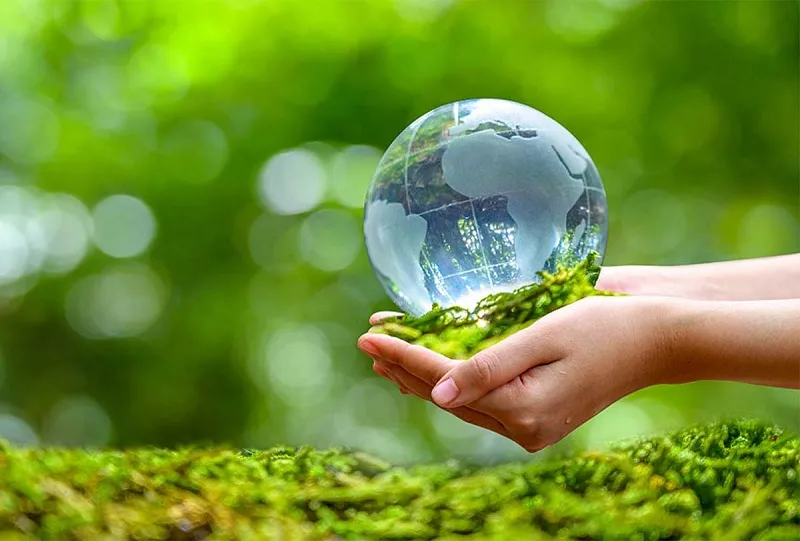

Bảo vệ môi trường là gì?
Trước khi đưa ra khái niệm bảo vệ môi trường là gì? Chúng ta trước tiên phải hiểu môi trường là gì?
Theo khoản 1 Điều 3 của Luật Bảo vệ môi trường số 72/2020/QH14 nêu rõ: Môi trường bao gồm các yếu tố vật chất tự nhiên và nhân tạo quan hệ mật thiết với nhau, bao quanh con người, có ảnh hưởng đến đời sống, kinh tế, xã hội, sự tồn tại, phát triển của con người, sinh vật và tự nhiên.
Vì vậy, bảo vệ môi trường là những hoạt động thiết thực của con người để cải thiện và giữ cho môi trường sống xung quanh của chúng ta luôn được sạch đẹp, trong lành.
Tại sao phải bảo vệ môi trường?
Luật bảo vệ môi trường cũng quy định rõ tại khoản 3 Điều 12: Ô nhiễm môi trường là sự biến đổi tính chất vật lý, hóa học, sinh học của thành phần môi trường không phù hợp với quy chuẩn kỹ thuật môi trường, tiêu chuẩn môi trường gây ảnh hưởng xấu đến sức khỏe con người, sinh vật và tự nhiên.
Có thể nói, môi trường là một trong những yếu tố rất quan trọng trong cuộc sống của con người chúng ta. Con người chủ động giữ cho môi trường xung quanh luôn sạch đẹp và trong lành cũng là cách để bạn tự bảo vệ chính bản thân mình.
Bảo vệ môi trường là trách nhiệm của ai?
Sau khi đã hiểu được bảo vệ môi trường là gì? Vậy bảo vệ môi trường là trách nhiệm của ai? Theo quy định của Luật Bảo vệ môi trường cũng đã nêu rõ tại trong khoản 1 Điều 4: Bảo vệ môi trường là quyền và nghĩa vụ đồng thời là trách nhiệm của mọi cơ quan, mọi tổ chức, của cả cộng đồng dân cư lẫn hộ gia đình và cá nhân.
05 biện pháp bảo vệ môi trường hiệu quả
- Trồng nhiều cây xanh, giữ gìn cây xanh và bảo vệ rừng
- Sử dụng năng lượng tái tạo
- Giảm thiểu sử dụng nhựa và tái chế
- Tiết kiệm nước
- Tham gia các hoạt động bảo vệ môi trường